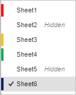

Podešavanja prikaza i alati za navigaciju
Da biste lakše pregledali i birali ćelije u velikim tabelama, Spreadsheet Editor nudi nekoliko alata: prilagodljive trake, klizače, dugmad za navigaciju kroz listove, kartice listova i zumiranje.
Podesite podešavanja prikaza
Da biste prilagodili podrazumevana podešavanja prikaza i podesili najpogodniji režim rada sa tabelom, otvorite karticu View. Možete izabrati sledeće opcije:
- Sheet View – za upravljanje prikazima listova. Da biste saznali više o prikazima listova, pročitajte sledeći članak.
- Zoom – za podešavanje željene vrednosti uvećanja od 50% do 500% iz padajuće liste.
- Interface Theme – izaberite jednu od dostupnih tema interfejsa iz padajućeg menija: Same as system, Light, Classic Light, Dark, Contrast Dark, Gray, Modern Light i Modern Dark.
- Freeze Panes – zamrzava sve redove iznad aktivne ćelije i sve kolone levo od aktivne ćelije tako da ostanu vidljivi prilikom pomeranja tabele udesno ili nadole. Da biste odmrzli okvire, jednostavno kliknite ovu opciju ponovo ili kliknite desnim tasterom miša bilo gde u radnom listu i izaberite opciju Unfreeze Panes iz menija.
- Formula Bar – kada je onemogućena, skriva traku ispod gornje trake sa alatkama koja se koristi za unos i pregled formula i njihovog sadržaja. Da biste ponovo prikazali skrivenu Formula Bar, kliknite ovu opciju još jednom. Prevlačenjem donje ivice trake sa formulama za proširenje menja se visina Formula Bar tako da se prikaže jedan red.
- Headings – kada je onemogućena, skriva zaglavlje kolona na vrhu i zaglavlje redova sa leve strane radnog lista. Da biste ponovo prikazali skrivena Headings, kliknite ovu opciju još jednom.
- Gridlines – kada je onemogućena, skriva linije oko ćelija. Da biste ponovo prikazali skrivene Gridlines, kliknite ovu opciju još jednom.
- Show Zeros – omogućava da se vrednost „0“ prikazuje kada je uneta u ćeliju. Da biste onemogućili ovu opciju, uklonite oznaku iz polja.
-
Always Show Toolbar – kada je ova opcija onemogućena, gornja traka sa alatkama koja sadrži komande biće skrivena, dok će nazivi kartica ostati vidljivi.
Alternativno, možete jednostavno dvaput kliknuti na bilo koju karticu da biste sakrili gornju traku sa alatkama ili je ponovo prikazali.
- Combine Sheet and Status Bars – prikazuje sve alate za navigaciju kroz listove i statusnu traku u jednoj liniji. Podrazumevano je ova opcija aktivna. Ako je onemogućite, statusna traka će se prikazivati u dve linije.
- Left Panel – kada je onemogućena, skriva levi panel na kome se nalaze dugmad Search, Comments itd. Da biste prikazali levi panel, označite ovo polje.
- Right Panel – kada je onemogućena, skriva desni panel na kome se nalaze Settings. Da biste prikazali desni panel, označite ovo polje.
Desna bočna traka je podrazumevano minimizovana. Da biste je proširili, izaberite bilo koji objekat (npr. sliku, grafikon, oblik) i kliknite na ikonu trenutno aktivne kartice sa desne strane. Da biste minimizovali desnu bočnu traku, kliknite na ikonu još jednom.
Takođe možete promeniti veličinu otvorenog panela Comments ili Chat koristeći jednostavno prevlačenje: pomerite pokazivač miša preko ivice leve bočne trake tako da se pretvori u dvosmernu strelicu i prevucite ivicu udesno da biste proširili širinu bočne trake. Da biste vratili originalnu širinu, pomerite ivicu ulevo.
Koristite alate za navigaciju
Da biste se kretali kroz tabelu, koristite sledeće alate:
Koristite taster Tab na tastaturi da biste se pomerili na ćeliju desno od izabrane.
Klizači (na dnu ili sa desne strane) koriste se za pomeranje trenutnog lista nagore/nadole i ulevo/udesno. Da biste se kretali kroz tabelu pomoću klizača:
- kliknite na strelice gore/dole ili desno/levo na klizačima;
- prevucite klizač;
- pomerajte točkić miša da biste se kretali vertikalno;
- koristite kombinaciju tastera Shift i točkića miša da biste se kretali horizontalno;
- kliknite na bilo koju oblast levo/desno ili iznad/ispod klizača na traci.
Takođe možete koristiti točkić miša da biste pomerali tabelu nagore ili nadole.
Dugmad za Navigaciju kroz listove nalaze se u donjem levom uglu i koriste se za pomeranje liste listova ulevo/udesno i navigaciju između kartica listova.
- kliknite na dugme Scroll sheet list left da biste pomerili listu listova trenutne tabele ulevo;
- kliknite na dugme Scroll sheet list right da biste pomerili listu listova trenutne tabele udesno;
Koristite dugme na statusnoj traci da biste dodali novi radni list.
Da biste izabrali željeni list:
-
kliknite na dugme na statusnoj traci da biste otvorili listu svih listova i izabrali onaj koji vam je potreban. Lista listova takođe prikazuje status lista,

ili
kliknite na odgovarajuću Karticu lista pored dugmeta .
Dugmad za Zoom nalaze se u donjem desnom uglu i koriste se za uvećavanje i umanjivanje trenutnog lista. Da biste promenili trenutno izabranu vrednost uvećanja koja je prikazana u procentima, kliknite na nju i izaberite jednu od dostupnih opcija iz liste (50% / 75% / 100% / 125% / 150% / 175% / 200% / 300% / 400% / 500%) ili koristite dugmad Zoom in ili Zoom out . Podešavanja zumiranja su takođe dostupna na kartici View. Postavljeno skaliranje se zadržava za sve fajlove tokom trenutne sesije.
Možete postaviti podrazumevanu vrednost zumiranja. Pređite na karticu File na gornjoj traci sa alatkama, otvorite odeljak Advanced Settings, izaberite potrebnu Default Zoom Value iz liste i kliknite na dugme Apply. Da biste koristili prethodno postavljeno skaliranje, pomerite se na vrh padajuće liste i izaberite opciju Last Used.